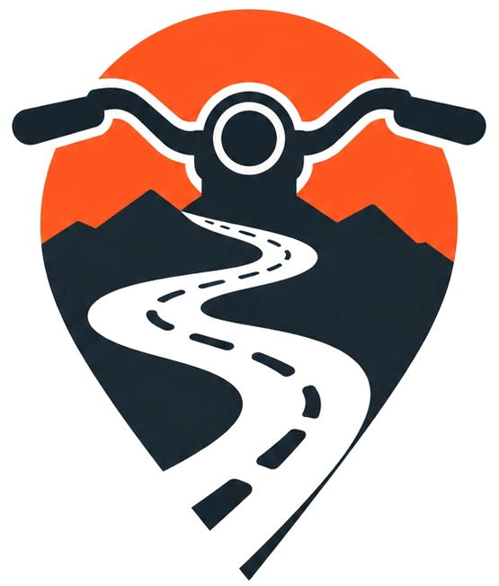

Switchback
Find
Find a road for me
Search this area
Save as home
Go home
Click the map to set your start.
Min length
Within
Ranking weights
Score = weighted mean of the six 0–1 components shown on each road. Unknown speed/traffic counts as a neutral 0.5. Formulas:
src/switchback/rank.py
. Defaults:
config/mvp.yml
.
My ride
↶ Undo
Reset
Add roads from the list or by clicking one on the map.
Return home
Stay on same road
Set finish
Direct
More twisties!
Find next road
Build route
Download GPX